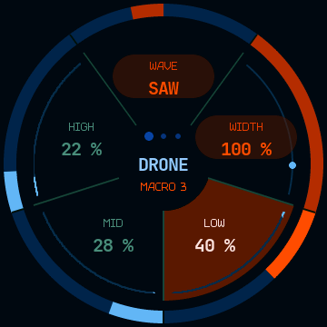
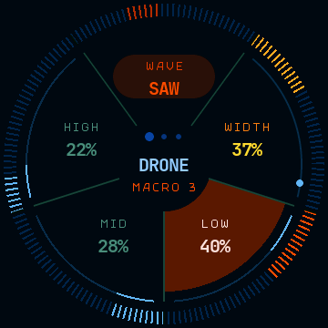
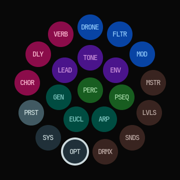
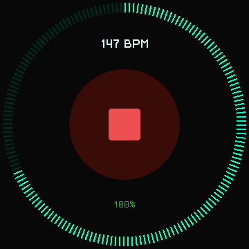

Раздел
Управление
Восемь разделов, у каждого свой цвет; обод — единственный орган управления, кроме тача.
регистры дрона и их фильтр Голос
лид: волна, тон, огибающая Время
ноты, сетка, арпеджиатор Перкуссия
удары и их сетка Рэк
хорус, дилей, реверб Микшеры
уровни и посылы Пресеты
хранение звука Настройки
свет, кольцо, отклик, память
Обод
Обод крутится и ведёт один параметр страницы — тот, чей сектор выбран. Значение меняется сразу, отдельного режима правки нет. Выбранный сектор залит, его дуга показывает значение.
Касание сектора выбирает параметр, который будет вести обод. Так переключаются между параметрами одной страницы.
Дуга заполняется по часовой стрелке у любого сектора: большее значение — дальше по часовой. В верхних секторах это читается слева направо, в нижних направление такое же, поэтому привычка одна на всю страницу.
Страницы листаются свайпом влево и вправо. Свайп идёт по страницам прибора и перешагивает служебные: настройки открываются шторкой, а не листанием. Долгое нажатие на сектор сводит параметр в макрос, двойной тап по участнику разворачивает его — об этом в следующем разделе.
Макрос
Долгое нажатие на сектор сводит параметр в макрос — связку, в которой несколько параметров ведёт одна ручка. Каждый участник помечается красным на секторе и на плитке своего раздела. В макрос входят параметры тембра; настройки железа — яркость, кольцо, отклик, приём нот — остаются в стороне.
Двойной тап по параметру, который уже в макросе, включает инверсию: параметр едет против макроса, и все его метки становятся жёлтыми.


Кольцо и экран
- Обод разбит на секторы по числу ручек страницы; выделенный сектор залит формой своего сектора в цвете раздела.
- Кольцо индикации по периметру работает в четырёх режимах: значение выбранной ручки, стереокартина, выключено и свет по звуку.
- Точки пагинации над заголовком показывают, где страница внутри своего раздела.
- Свайп вниз открывает шторку — карту разделов кольцами цветных плиток: 21 плитка, выбранная растёт.
- Свайп снизу вверх открывает экран транспорта: кнопка стоп/плей, темп и заряд батареи.
- Кнопка транспорта держит цвет состояния: зелёная на ходу, красная на остановке.
- Экран транспорта зеркалит фактический темп: арка и подпись BPM показывают темп, которым инструмент играет, — темп с провода, пока идут часы, и значение ручки, когда часы пропали. Ручка и запись темпа в патч работают как раньше.


Дисплей при включении
Панель поднимается тёмной и остаётся тёмной, пока не построен экран приложения. Затем подсветка выезжает за 200 мс до выставленной яркости. Так при включении не показывается белое поле, которое раньше держалось около секунды.
Батарея
Состояние заряда показано цветом: зелёный, когда узел банки держит зарядник, красный,
когда прибор работает от банки, и приглушённый с --, когда по пину нет чтения.
-- отдельно от нуля процентов, который означает пустую банку. Это вывод из
напряжения: отдельного пина состояния заряда на плате нет, выход STAT зарядника
идёт на светодиод и до микроконтроллера не доходит. Решение
принимается по сырому измерению с двумя порогами, поэтому переключается за одно чтение,
то есть за пять секунд, в обе стороны.